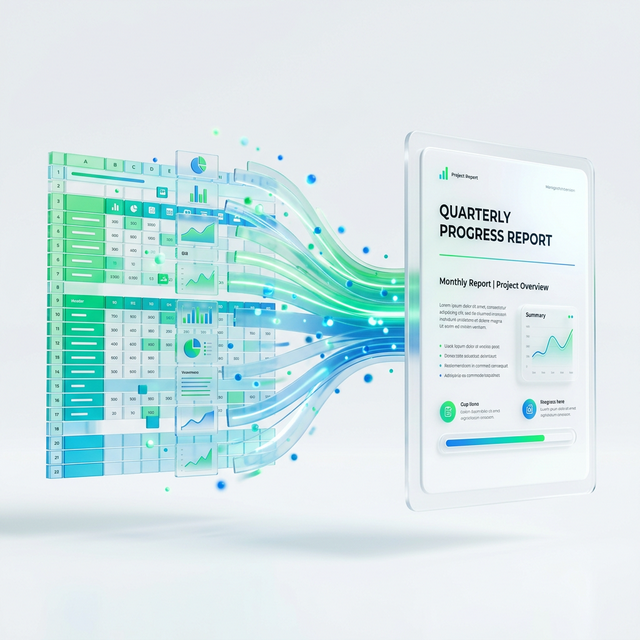

How to Convert Excel to PDF While Keeping Perfect Formatting

Converting Excel spreadsheets to PDF is one of the most common tasks for professionals, yet it's often the most frustrating. Tables get cut off, column widths change, and horizontal pages suddenly become vertical.
At PDFjin, we use specialized rendering engines that respect your original spreadsheet layout. Here is the ultimate guide to getting perfect results every time.
Step 1: Prepare Your Spreadsheet
Before uploading to any converter, ensure your Print Area is defined in Excel. This tells the converter exactly which cells matter. While PDFjin's AI tries to guess your intended layout, a defined print area is a foolproof way to ensure quality.
Expert Tip
Scaling to "Fit All Columns on One Page" is the single best setting you can use in Excel before converting to ensure your data stays readable in a PDF.
Step 2: Upload to PDFjin
Navigate to our Excel to PDF tool. Drag and drop your .xlsx or .xls file. Our server will immediately begin processing the document using a headless rendering engine that mimics a high-quality physical printer.
Step 3: Download and Verify
Once the conversion is complete, click download. You'll notice that:
- Fonts are perfectly preserved.
- Tables maintain their borders and spacing.
- Links and formulas are flattened but visually identical.
Ready to try it out?
Stop fighting with your printer settings; transform your spreadsheets into professional PDFs now.
Go to Excel to PDF ToolConclusion
Stop fighting with your printer settings; use a dedicated tool like PDFjin to ensure your professional data remains professional, even in PDF format.